Requisito de conteúdo local
Algumas compras públicas exigem que os materiais ou serviços oferecidos contenham uma porcentagem mínima de insumos produzidos no Brasil. Esse requisito é chamado de conteúdo local.
Este tutorial orienta você sobre como informar essa exigência no sistema Compras.gov.br ao registrar uma licitação. Ao ativar o requisito de conteúdo local, o sistema automaticamente rejeitará qualquer proposta que não atenda a essa exigência.
Siga os passos abaixo para configurar corretamente sua licitação:
Acessar o Sistema Compras.gov.br
Para realizar compras no Portal de Compras do Governo Federal, é necessário fazer login com sua conta de acesso gov.br. Siga os passos abaixo:
Passo 1: Acessar o Portal
Abra seu navegador e acesse o endereço www.gov.br/compras. Na página inicial, localize o botão Acesso ao Sistema e clique nele.
Passo 2: Selecionar o Tipo de Acesso
A tela de login apresentará diferentes opções de acesso. Clique em Governo para acessar como representante de órgão público.

Passo 3: Fazer Login com Sua Conta gov.br
Você será redirecionado para a página de autenticação do gov.br. Faça login informando: - Seu CPF (com ou sem pontuação) - Sua senha cadastrada na plataforma gov.br

Se você ainda não possui uma conta gov.br, acesse www.gov.br para criar uma antes de continuar.
Após inserir suas credenciais corretamente, você terá acesso ao sistema Compras.gov.br.
Cadastramento da licitação
Agora que você está autenticado no sistema, precisa criar um novo processo de licitação. Siga os passos abaixo para registrar os dados básicos da sua compra.
Passo 2: Criar uma Licitação Tradicional
Você será redirecionado para a tela principal do SIASGnet (o sistema que gerencia licitações do governo). No menu lateral, clique em Licitação e depois escolha Incluir Licitação Tradicional.
Licitação Tradicional é a forma mais comum de realizar compras governamentais. É o tipo que você deve usar na maioria dos casos.
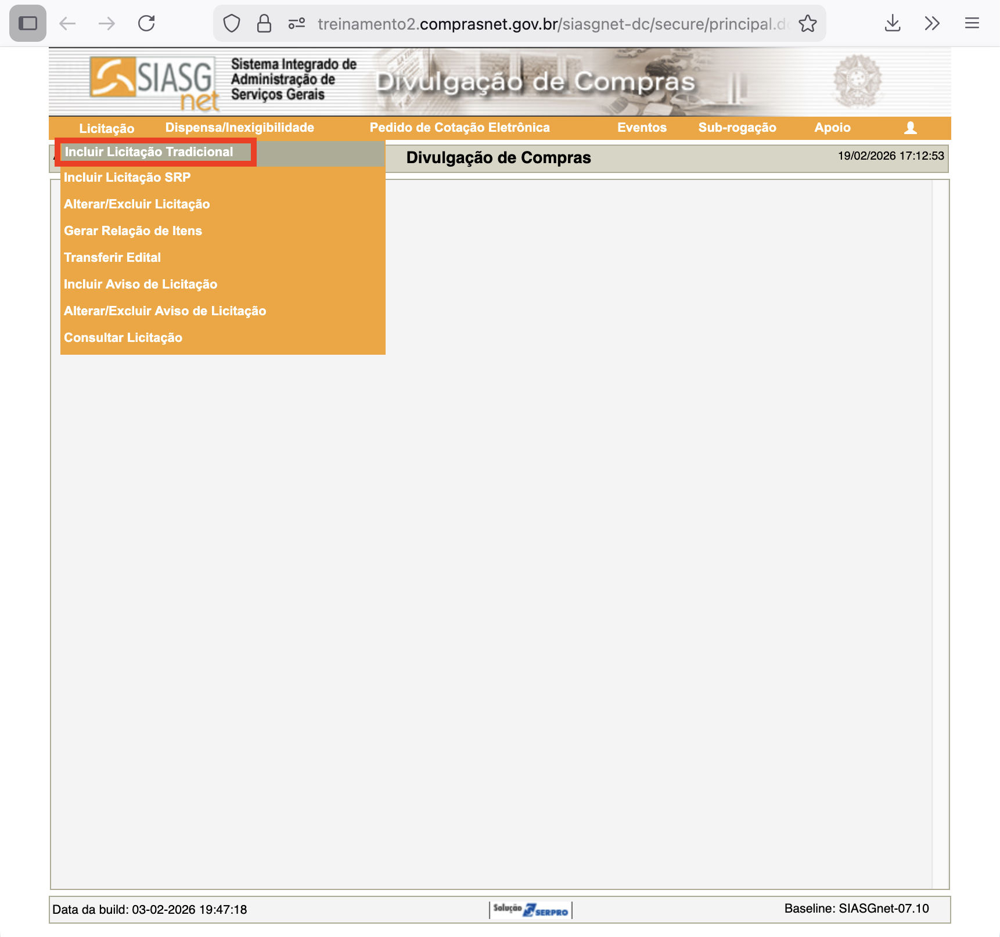
Passo 3: Preencher os Dados Básicos da Licitação
Agora você precisa informar as características principais da sua licitação. Preencha todos os campos obrigatórios (aqueles marcados com asterisco *), tais como:
Informações sobre o tipo de compra: - Modalidade de Licitação: o tipo de processo que você está usando (por exemplo: Concorrência, Tomada de Preços, Convite) - Forma de Realização: se será presencial ou eletrônica (online) - Modo de Disputa: como as empresas vão competir (menor preço, técnica e preço, etc.)
Informações sobre a compra: - Objeto: o que você está comprando (material de consumo, serviços, obras, etc.). Descreva de forma clara - Quantidade de Itens: quantos itens diferentes fazem parte desta licitação - Valor Total da Compra (R$): o orçamento total estimado para toda a licitação
Informação sobre o responsável: - CPF do Responsável: o CPF da pessoa que está registrando esta licitação no sistema
CPF do Responsável: Depois de digitar um CPF válido, clique no ícone da lupa ao lado. O sistema buscará automaticamente o nome completo da pessoa associada àquele CPF. Isso economiza tempo e evita erros de digitação.
Passo 4: Salvar a Licitação
Quando terminar de preencher todos os campos obrigatórios, clique no botão Salvar, localizado na parte inferior da página.
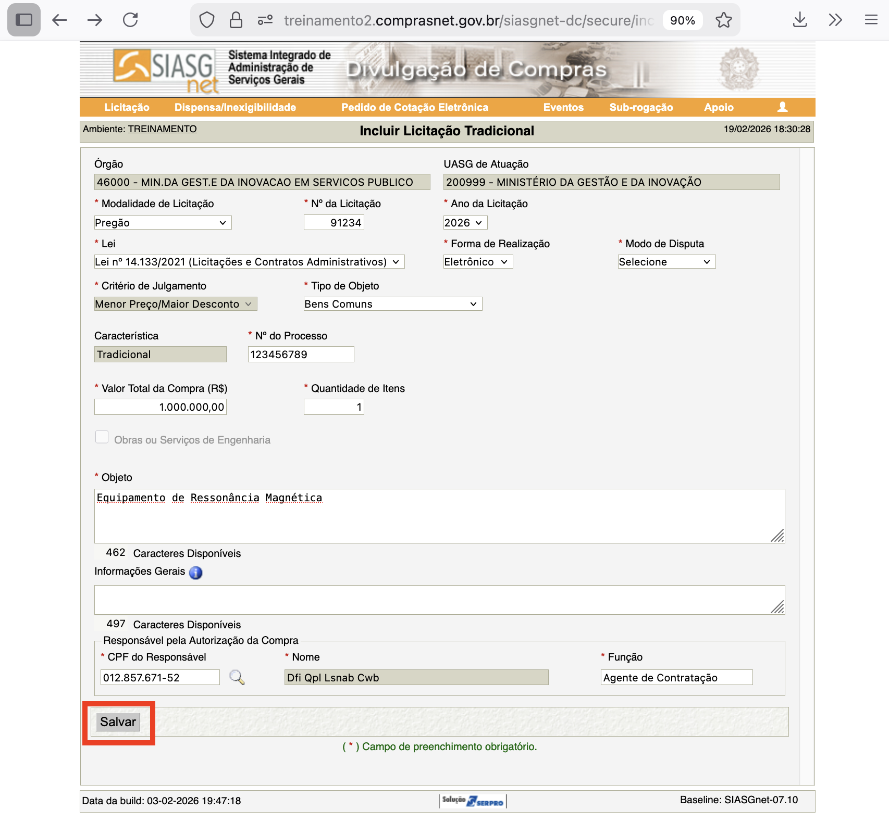
Passo 5: Confirmar o Cadastro
Ao completar o cadastro, o sistema exibirá uma mensagem de confirmação indicando que a licitação foi criada com sucesso. Você verá um resumo dos dados que acabou de inserir.

Guarde o número de identificação da licitação para futuras referências. Você usará este número para rastrear o processo.
Parabéns! Você criou com sucesso a licitação no sistema. Agora você pode prosseguir para as próximas etapas, como o cadastramento dos itens que serão licitados.
Cadastramento dos itens
Agora você precisa adicionar os itens (produtos ou serviços) que serão licitados. No passo anterior, criamos uma licitação básica. Nesta etapa, vamos detalhar os itens e indicar quais deles exigem conteúdo local.
Passo 1: Acessar a Seção Itens
Clique em Itens na parte inferior da tela que mostra os dados básicos da licitação cadastrada.
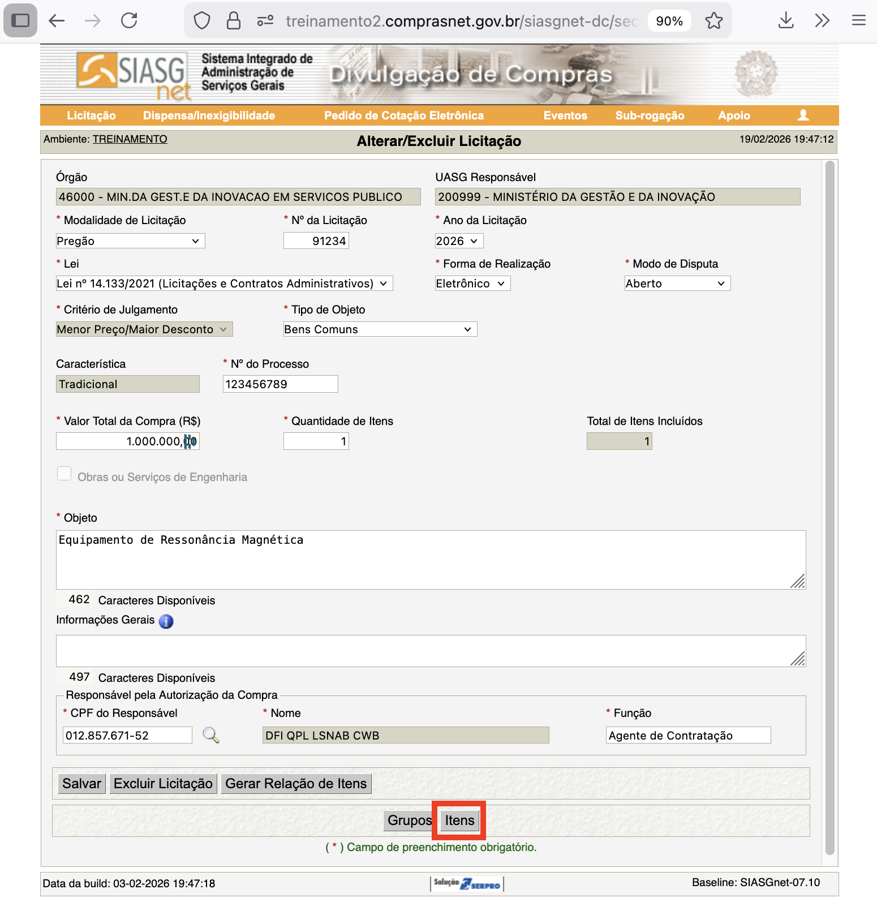
O sistema informará que a licitação ainda não possui itens cadastrados. Clique em Incluir itens para adicionar itens à sua licitação.
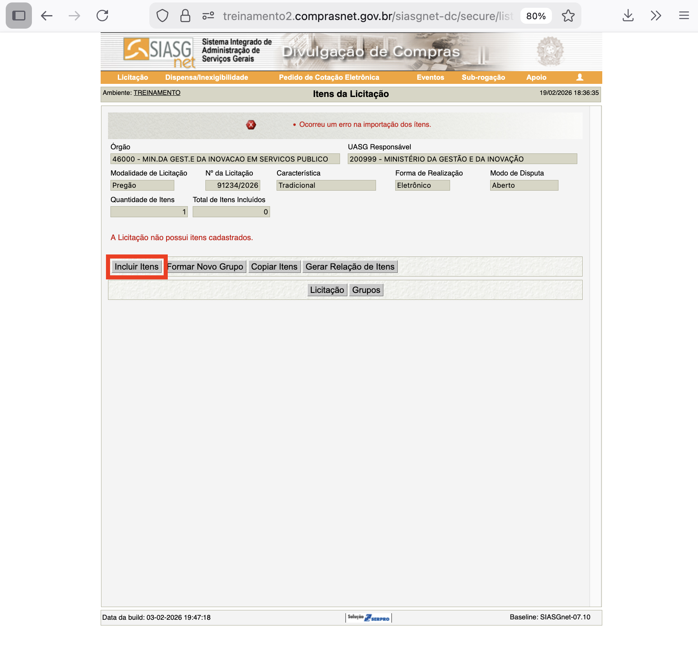
Passo 2: Acessar o Catálogo de Materiais e Serviços
O Catálogo de Materiais e Serviços será aberto em uma nova janela. Este catálogo contém todos os produtos e serviços que podem ser licitados pelo governo.

Passo 3: Pesquisar o Material ou Serviço
Procure pelo material ou serviço que deseja adicionar. Você pode buscar pelo nome (por exemplo: “papel A4”) ou pelo código CATMAT ou CATSER, que são os códigos identificadores no catálogo.

Passo 4: Selecionar Itens
Após encontrar o item desejado, selecione a unidade de fornecimento (por exemplo: unidade, caixa, quilograma, etc.) conforme necessário para sua compra. Em seguida, clique em Adicionar para incluir este item na sua seleção.

O sistema confirmará que o item foi adicionado com sucesso. Você verá um ícone de carrinho de compras com um número indicando quantos itens foram selecionados.

Se você tem mais itens a adicionar: Repita os passos 3 e 4 para cada item que faz parte de sua licitação. Todos os itens aparecerão no carrinho de compras.
Passo 5: Transferir Itens para o SIASGnet
Quando terminar de selecionar todos os itens, clique no ícone do carrinho de compras. Você verá a lista completa dos itens selecionados. Clique em Adicionar ao SIASGnet para transferir todos esses itens para a licitação que você criou anteriormente.

Passo 6: Completar Informações dos Itens
Os itens aparecem na tela principal do SIASGnet, mas ainda faltam informações para completar o cadastro. Clique em Alterar ao lado de cada item para adicionar os detalhes que faltam:
- Quantidade: quanto você precisa desta item
- Critério de Julgamento: como as propostas serão avaliadas (menor preço, técnica e preço, etc.)
- Valor Total: quanto você está orçando para este item
- E outras informações específicas conforme solicitado pelo sistema
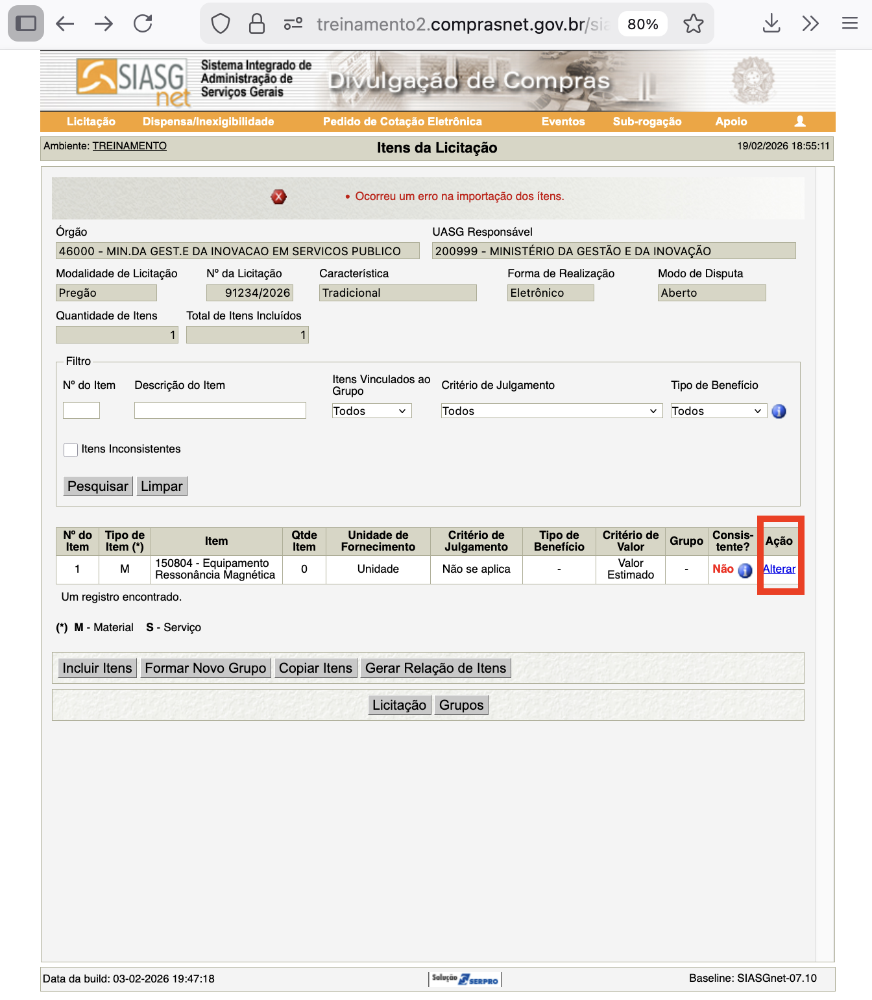
Antes de salvar, verifique se todas as informações correspondem ao que você escreveu no edital da licitação. Qualquer diferença pode causar problemas.
Passo 7: Ativar a Exigência de Conteúdo Local
Para ativar a exigência de conteúdo local para este item, siga estas ações:
- Marque Sim na pergunta É uma aquisição PAC? (PAC refere-se ao programa de investimento do governo)
- Depois, ative (marque) a caixa Exigência de Conteúdo Nacional
Importante: Você pode ter itens diferentes em uma mesma licitação. Alguns podem exigir conteúdo local enquanto outros não exigem. Configure cada item conforme sua necessidade.
Passo 8: Salvar o Item
Clique em Salvar Item para registrar todas as informações do item.

Passo 9: Confirmar a Exigência de Conteúdo Local
O sistema pedirá uma confirmação sobre a exigência de conteúdo local. Você está confirmando que está em conformidade com as regulamentações de compras governamentais. Clique em OK para confirmar.

Uma mensagem de sucesso aparecerá confirmando que as informações foram salvas.

Se você tem mais itens: Volte à tela Itens da Licitação e repita os passos 6 a 9 para cada item que precisa de configuração.
Publicação da contratação
Depois de configurar todos os itens, você precisa gerar um documento com a relação deles e fazer a licitação ser publicada oficialmente.
Passo 1: Gerar Relação de Itens
Na tela Itens da Licitação, clique em Gerar Relação de Itens.

Passo 2: Confirmar Geração da Relação
Uma nova tela aparecerá. Clique novamente em Gerar Relação de Itens para confirmar.
O sistema confirmará que a relação de itens foi criada com sucesso.

Passo 3: Avançar para Transferência do Edital
Clique em Transferir Edital para avançar para a próxima etapa.
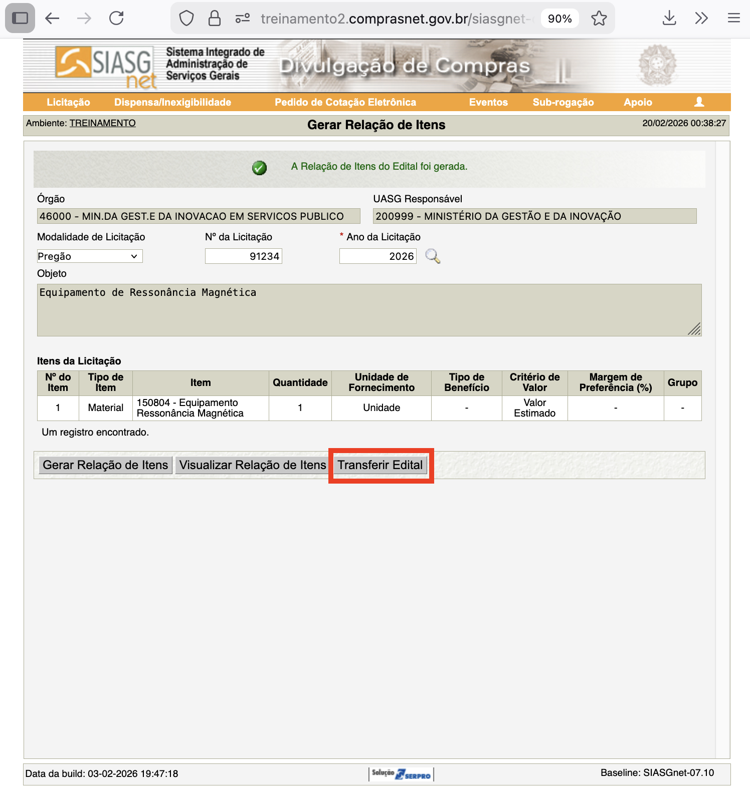
Passo 4: Selecionar o Arquivo do Edital
Na tela Transferir Edital, você precisa enviar o arquivo do edital (o documento que contém as regras e condições da licitação). Clique em Escolher arquivo e selecione o arquivo do seu edital no seu computador.
Passo 5: Enviar o Edital
Depois de selecionar o arquivo, clique em Transferir para enviar o edital para o sistema.
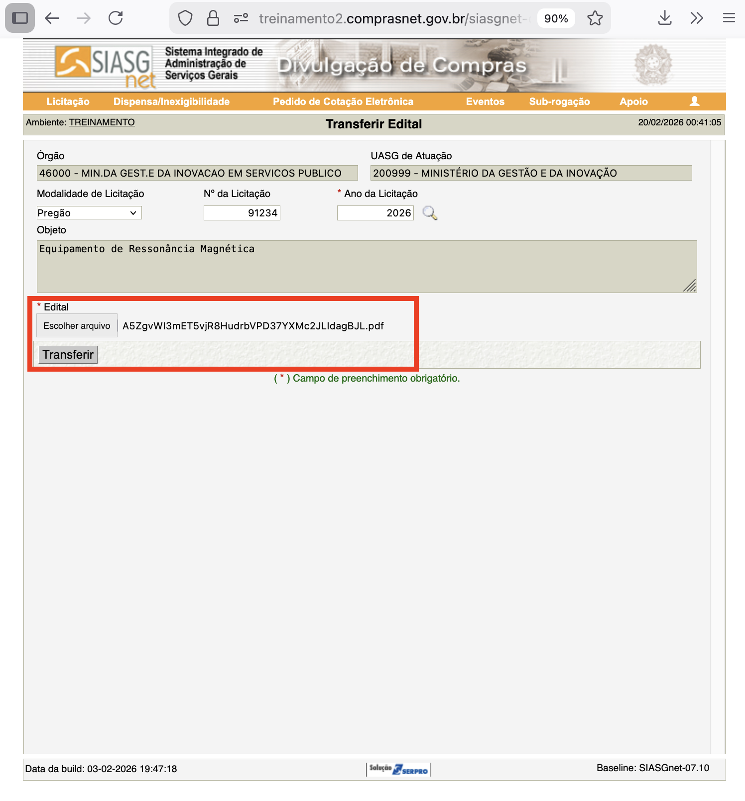
Uma mensagem confirmará que o edital foi enviado com sucesso.
Passo 6: Incluir Aviso de Licitação
Clique em Incluir Aviso de Licitação para prosseguir para a próxima etapa.
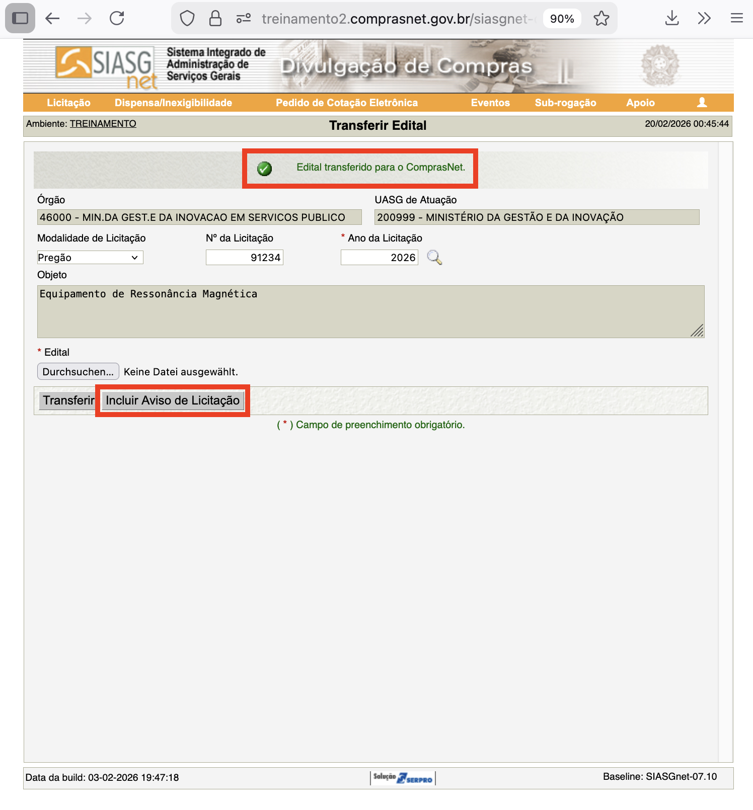
Passo 7: Informar Datas e Horários da Licitação
Na tela Incluir Aviso de Licitação, você precisa informar as datas e horários importantes da sua licitação:
- Publicação/Divulgação do Aviso de Licitação: quando o aviso será publicado
- Disponibilidade do Edital: a partir de quando as empresas podem acessar o documento
- Entrega da Proposta: data e hora limite para as empresas enviarem suas propostas
- Abertura da Licitação: quando as propostas serão abertas e lidas
Preencha essas informações conforme planejado para sua licitação. Depois, clique em Salvar Aviso.
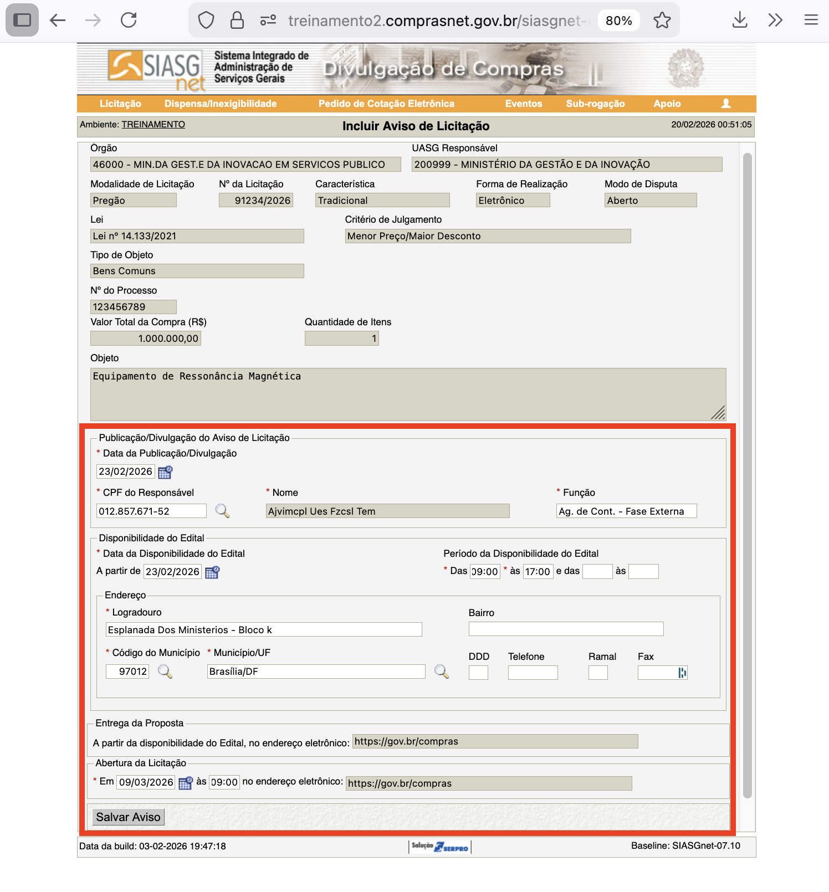
Uma mensagem confirmará que o Aviso de Licitação foi salvo com sucesso.
Passo 8: Preparar para Publicação
Clique em Disponibilizar para Publicação/Divulgação para preparar a licitação para ser publicada online.

Passo 9: Revisar e Disponibilizar para Publicação
Na tela Disponibilizar para Publicação/Divulgação, você verá um resumo dos dados da licitação. Verifique se está correto e clique em Disponibilizar para Publicação/Divulgação.
Não é obrigatório preencher as informações sobre “Empenho Referente ao Contrato com a Imprensa Nacional” nesta tela. Você pode deixar em branco se não for necessário.

Passo 10: Confirmar Publicação nos Canais Oficiais
O sistema exibirá um aviso informando onde a licitação será publicada: - Diário Oficial da União (jornal oficial do governo) - Portal PNCP (portal de contratações públicas) - Compras.gov.br (este portal)
Clique em OK para confirmar a publicação.
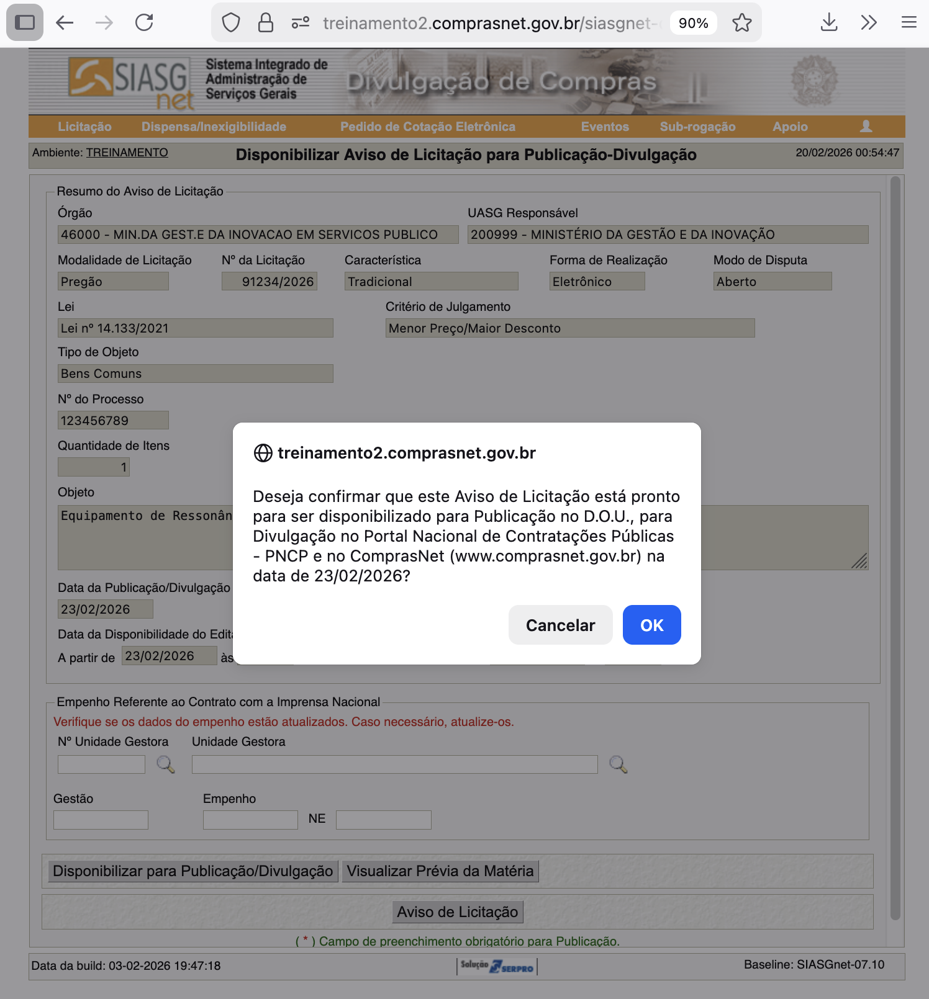
Uma mensagem de confirmação aparecerá indicando que a licitação será publicada nos canais oficiais na data que você especificou.
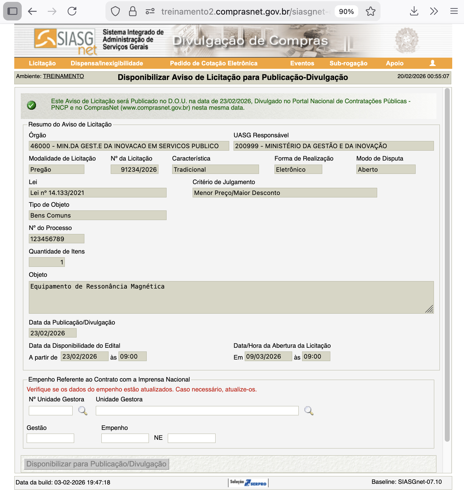
Parabéns! Sua licitação com requisito de conteúdo local foi criada e publicada com sucesso.
O que acontece quando as empresas enviam propostas?
Depois que a data de abertura da licitação chega, as empresas podem enviar suas propostas (ofertas). O sistema automaticamente valida se cada proposta está em conformidade com os requisitos que você definiu.
Para os itens que você marcou como exigindo conteúdo local, o sistema só aceitará propostas de empresas que declararem explicitamente que:
o material ofertado se enquadra nas regras de conteúdo nacional estabelecido na Legislação Vigente.
Se uma empresa tentar enviar uma proposta sem fazer essa declaração, o sistema automaticamente rejeitará a proposta e exibirá uma mensagem de erro. Isso garante que apenas materiais e serviços com conteúdo local adequado sejam considerados na sua licitação.